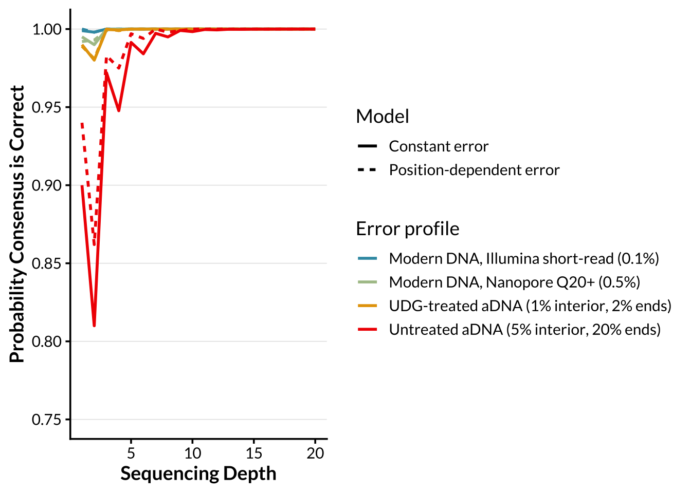
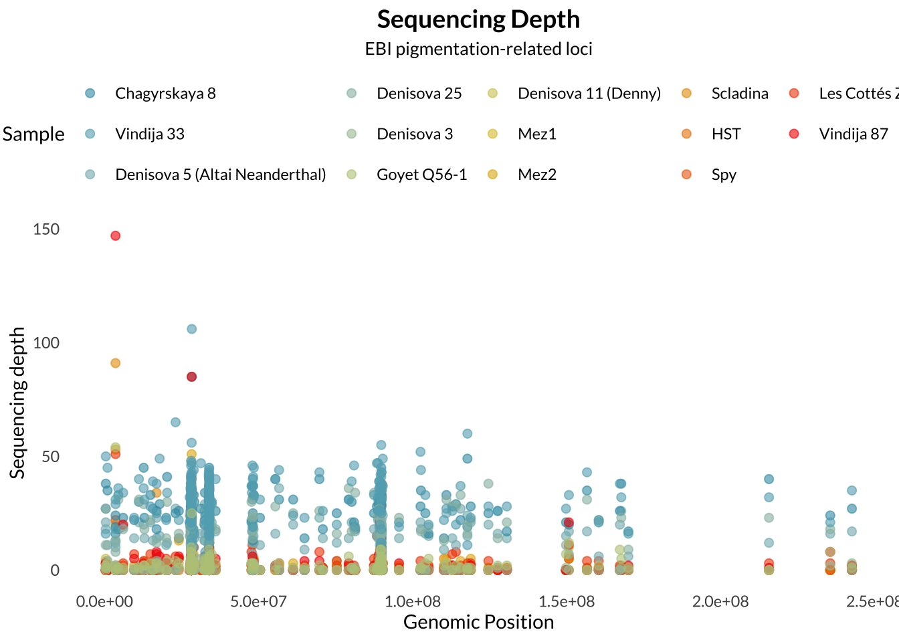
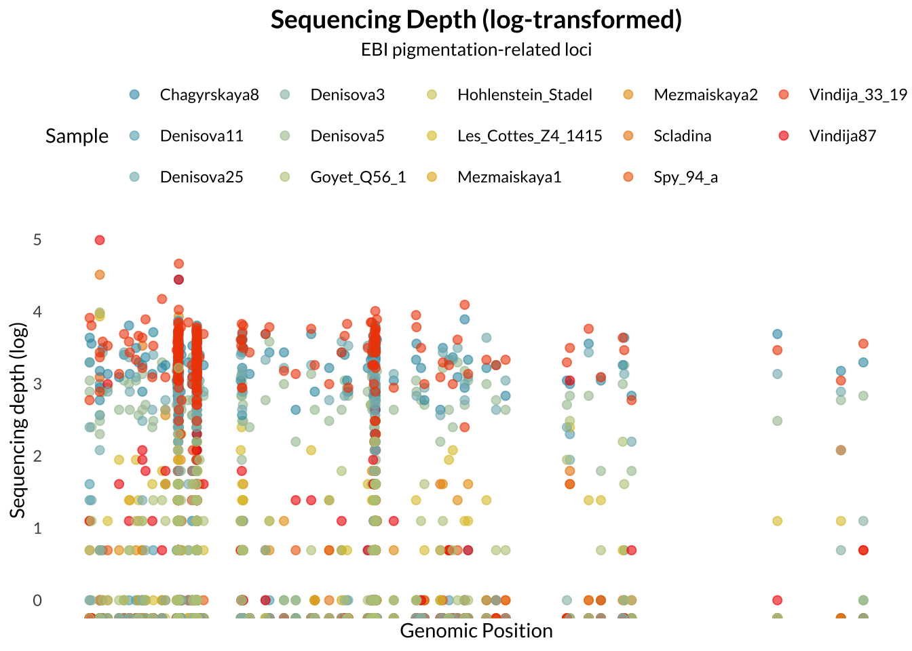
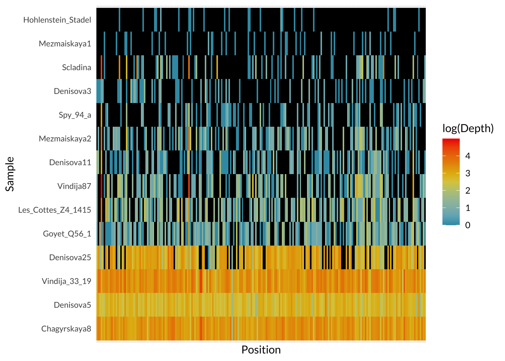

Last updated: 2026-04-14
Checks: 7 0
Knit directory: ~/Documents/GitHub/PAINT/
This reproducible R Markdown analysis was created with workflowr (version 1.7.2). The Checks tab describes the reproducibility checks that were applied when the results were created. The Past versions tab lists the development history.
Great! Since the R Markdown file has been committed to the Git repository, you know the exact version of the code that produced these results.
Great job! The global environment was empty. Objects defined in the global environment can affect the analysis in your R Markdown file in unknown ways. For reproduciblity it’s best to always run the code in an empty environment.
The command set.seed(20251106) was run prior to running
the code in the R Markdown file. Setting a seed ensures that any results
that rely on randomness, e.g. subsampling or permutations, are
reproducible.
Great job! Recording the operating system, R version, and package versions is critical for reproducibility.
Nice! There were no cached chunks for this analysis, so you can be confident that you successfully produced the results during this run.
Great job! Using relative paths to the files within your workflowr project makes it easier to run your code on other machines.
Great! You are using Git for version control. Tracking code development and connecting the code version to the results is critical for reproducibility.
The results in this page were generated with repository version 77cf993. See the Past versions tab to see a history of the changes made to the R Markdown and HTML files.
Note that you need to be careful to ensure that all relevant files for
the analysis have been committed to Git prior to generating the results
(you can use wflow_publish or
wflow_git_commit). workflowr only checks the R Markdown
file, but you know if there are other scripts or data files that it
depends on. Below is the status of the Git repository when the results
were generated:
Ignored files:
Ignored: .RData
Ignored: .Rhistory
Ignored: .Rproj.user/
Ignored: analysis/.Rhistory
Ignored: analysis/.Rproj.user/
Ignored: analysis/depth_spinoff.Rmd
Ignored: data/allele_ref.txt
Ignored: data/ancient.projected.log
Ignored: data/ancient_aligned.bed
Ignored: data/ancient_aligned.bim
Ignored: data/ancient_aligned.fam
Ignored: data/ancient_aligned.log
Ignored: data/ancient_depth.csv
Ignored: data/ancient_depth_clean.csv
Ignored: data/ancient_matched.bed
Ignored: data/ancient_matched.bim
Ignored: data/ancient_matched.fam
Ignored: data/ancient_matched.log
Ignored: data/ancient_metadata.csv
Ignored: data/ancient_pigment.bed
Ignored: data/ancient_pigment.bim
Ignored: data/ancient_pigment.fam
Ignored: data/ancient_pigment.log
Ignored: data/ancient_pigmentation.bed
Ignored: data/ancient_pigmentation.bim
Ignored: data/ancient_pigmentation.fam
Ignored: data/ancient_pigmentation.log
Ignored: data/ancient_pigmentation.projected.log
Ignored: data/ancient_pigmentation.vcf.gz
Ignored: data/ancient_pigmentation.vcf.gz.tbi
Ignored: data/ancient_temp.bed
Ignored: data/ancient_temp.bim
Ignored: data/ancient_temp.fam
Ignored: data/ancient_temp.log
Ignored: data/ancient_temp.pgen
Ignored: data/ancient_temp.psam
Ignored: data/ancient_temp.pvar
Ignored: data/modern_matched.bed
Ignored: data/modern_matched.bim
Ignored: data/modern_matched.fam
Ignored: data/modern_matched.log
Ignored: data/modern_matched.pgen
Ignored: data/modern_matched.psam
Ignored: data/modern_matched.pvar
Ignored: data/modern_metadata.csv
Ignored: data/neo_uvi.csv
Ignored: data/pigmentation.cleaned.log
Ignored: data/pigmentation.cleaned.pgen
Ignored: data/pigmentation.cleaned.psam
Ignored: data/pigmentation.cleaned.pvar
Ignored: data/pigmentation.freq.afreq
Ignored: data/pigmentation.freq.log
Ignored: data/pigmentation.pca.eigenvec.allele
Ignored: data/pigmentation.pca.log
Ignored: data/pigmentation_freq.log
Ignored: data/pigmentation_merged-merge.psam
Ignored: data/pigmentation_merged-merge.pvar
Ignored: data/pigmentation_merged.log
Ignored: data/pigmentation_snps.bed
Ignored: data/pigmentation_snps.bim
Ignored: data/pigmentation_snps.csv
Ignored: data/pigmentation_snps.fam
Ignored: data/pigmentation_snps.fixed.bed
Ignored: data/pigmentation_snps.fixed.bim
Ignored: data/pigmentation_snps.fixed.fam
Ignored: data/pigmentation_snps.fixed.log
Ignored: data/pigmentation_snps.fixed.pgen
Ignored: data/pigmentation_snps.fixed.psam
Ignored: data/pigmentation_snps.fixed.pvar
Ignored: data/pigmentation_snps.vcf.gz
Ignored: data/pigmentation_snps.vcf.gz.tbi
Ignored: data/pigmentation_snps_freq.afreq
Ignored: data/sgdp.wg.afreq
Ignored: data/sgdp.wg.fixed.afreq
Ignored: data/sgdp.wg.pca.eigenvec.allele
Ignored: data/simons_metadata.csv
Ignored: data/simons_whole.csv
Ignored: plink2.log
Ignored: plink2.zip
Ignored: test.log
Note that any generated files, e.g. HTML, png, CSS, etc., are not included in this status report because it is ok for generated content to have uncommitted changes.
These are the previous versions of the repository in which changes were
made to the R Markdown (analysis/depth.Rmd) and HTML
(docs/depth.html) files. If you’ve configured a remote Git
repository (see ?wflow_git_remote), click on the hyperlinks
in the table below to view the files as they were in that past version.
| File | Version | Author | Date | Message |
|---|---|---|---|---|
| Rmd | 77cf993 | Lily Heald | 2026-04-14 | Update missing map |
| html | c24375e | Lily Heald | 2026-04-14 | Build site. |
| Rmd | bd542a3 | Lily Heald | 2026-04-14 | Clean depth page |
| html | 2be3b23 | Lily Heald | 2026-04-14 | Build site. |
| Rmd | c6c417e | Lily Heald | 2026-04-14 | Add position-dependent model |
| html | 01f0325 | Lily Heald | 2026-04-09 | Ignore unfinished analyses |
| html | f2c0937 | Lily Heald | 2026-04-08 | Add mixed effects model |
| Rmd | c6a3c43 | Lily Heald | 2026-04-08 | wflow_publish(c("analysis/depth.Rmd", "analysis/introduction.Rmd")) |
| Rmd | 6bbb8f9 | Lily Heald | 2026-03-30 | add sgdp slurm job |
| html | 015848d | Lily Heald | 2026-03-30 | Build site. |
| Rmd | 4e882f0 | Lily Heald | 2026-03-30 | add confidence simulation |
| html | e22ec65 | Lily Heald | 2026-03-29 | Build site. |
| html | d44f320 | Lily Heald | 2026-03-29 | change theme |
| Rmd | 216fc6e | Lily Heald | 2026-03-27 | Update text |
| html | 552a0a3 | Lily Heald | 2026-03-26 | Build site. |
| html | 7394148 | Lily Heald | 2026-03-26 | Build site. |
| Rmd | 610f95c | Lily Heald | 2026-03-26 | wflow_publish("analysis/depth.Rmd") |
| html | bce46ce | Lily Heald | 2026-03-26 | Build site. |
| Rmd | b98a9f1 | Lily Heald | 2026-03-26 | wflow_publish("analysis/depth.Rmd") |
| Rmd | a713e79 | Lily Heald | 2026-03-26 | Create summary tables |
| html | a713e79 | Lily Heald | 2026-03-26 | Create summary tables |
| html | ce1571b | Lily Heald | 2026-03-26 | Build site. |
| html | 2d31b45 | Lily Heald | 2026-03-26 | Build site. |
| Rmd | 05c4750 | Lily Heald | 2026-03-26 | stack snp distribution |
| html | 05c4750 | Lily Heald | 2026-03-26 | stack snp distribution |
Sequencing depth is an important measure in genotyping. Sequencing depth refers to the number of times a specific nucleotide was sequenced. A higher sequencing depth confers more confidence in the accuracy of the base calls, as it reduces the likelihood of technical errors in sequencing.

| Version | Author | Date |
|---|---|---|
| 2be3b23 | Lily Heald | 2026-04-14 |
Sequencing read alignments were processed using samtools. The input BAM file was first indexed, then coordinate-sorted and re-indexed to ensure compatibility with downstream analyses. Read depth was calculated for archaic samples at the specified pigmentation-related SNP panel using samtools depth including sites with zero coverage.


Several archaic genomes exist at low coverage, including the early Denisova 3 draft genome, the Denisova 11 (“Denny”) admixed individual, and later Neanderthals sequenced at ~1-2.7x coverage (Hajdinjak et al., 2018; Reich et al., 2010; Sawyer et al., 2015; Slon et al., 2018). These genomes are important for population history, but they are less reliable due to high levels of missingness and uncertainty. For that reason, the archaeological availability of high-coverage genomes limits phenotype inference. The high-coverage record includes only five individuals, ranging from 200-50ka, and a narrow geographic range.
These genomes make direct archaic pigmentation analyses possible, but only in the manner of descriptions and comparisons. This limited dataset does not provide enough statistical power to make claims about the full pigmentation range of Neanderthals or Denisovans as groups. This motivates the aim of this study to provide a locus-level catalog of pigmentation-associated SNPs in available archaic genomes, and then compare those with variation in diverse modern humans. In order to examine patterns of missingness, I created a heatmap of where sequencing depth = 0.

What factors explain why a SNP is missing in ancient samples, after accounting for sample-to-sample variability?
ancient_depth <- ancient_depth %>%
mutate(log_depth = log(Depth),
age_scaled = scale(Age_ka))
mod1 <- glmer(Missing ~ Chromosome + age_scaled + (1 | Coverage) + (1 | Sample), data = ancient_depth, family = binomial)
summary(mod1)Generalized linear mixed model fit by maximum likelihood (Laplace
Approximation) [glmerMod]
Family: binomial ( logit )
Formula: Missing ~ Chromosome + age_scaled + (1 | Coverage) + (1 | Sample)
Data: ancient_depth
AIC BIC logLik -2*log(L) df.resid
2639.8 2669.6 -1314.9 2629.8 2881
Scaled residuals:
Min 1Q Median 3Q Max
-3.13660 -0.63735 -0.03076 0.60274 2.46980
Random effects:
Groups Name Variance Std.Dev.
Sample (Intercept) 0.9523 0.9759
Coverage (Intercept) 12.5088 3.5368
Number of obs: 2886, groups: Sample, 13; Coverage, 2
Fixed effects:
Estimate Std. Error z value Pr(>|z|)
(Intercept) -2.589293 2.501296 -1.035 0.300585
Chromosome -0.019465 0.008841 -2.202 0.027691 *
age_scaled 1.335588 0.357997 3.731 0.000191 ***
---
Signif. codes: 0 '***' 0.001 '**' 0.01 '*' 0.05 '.' 0.1 ' ' 1
Correlation of Fixed Effects:
(Intr) Chrmsm
Chromosome -0.034
age_scaled -0.094 -0.005Missingness is strongly influenced by sequencing coverage, with low-coverage data showing substantially higher missingness. After accounting for this technical factor, age has a significant positive effect, indicating that older samples exhibit increased missing data. Chromosome has a small but significant effect, suggesting minor structural or genomic influences.
Coverage is included as a random effect, allowing the baseline probability of missingness to differ based on overall sequence quality.
sessionInfo()R version 4.4.2 (2024-10-31)
Platform: aarch64-apple-darwin20
Running under: macOS 26.3.1
Matrix products: default
BLAS: /Library/Frameworks/R.framework/Versions/4.4-arm64/Resources/lib/libRblas.0.dylib
LAPACK: /Library/Frameworks/R.framework/Versions/4.4-arm64/Resources/lib/libRlapack.dylib; LAPACK version 3.12.0
locale:
[1] en_US.UTF-8/en_US.UTF-8/en_US.UTF-8/C/en_US.UTF-8/en_US.UTF-8
time zone: America/Detroit
tzcode source: internal
attached base packages:
[1] stats graphics grDevices utils datasets methods base
other attached packages:
[1] lme4_1.1-38 Matrix_1.7-4 shiny_1.12.1 wesanderson_0.3.7
[5] showtext_0.9-7 showtextdb_3.0 sysfonts_0.8.9 lubridate_1.9.4
[9] forcats_1.0.1 stringr_1.6.0 dplyr_1.2.0 purrr_1.2.1
[13] readr_2.1.6 tidyr_1.3.2 tibble_3.3.1 tidyverse_2.0.0
[17] ggplot2_4.0.2 workflowr_1.7.2
loaded via a namespace (and not attached):
[1] gtable_0.3.6 xfun_0.56 bslib_0.10.0 processx_3.8.6
[5] lattice_0.22-7 callr_3.7.6 tzdb_0.5.0 Rdpack_2.6.5
[9] vctrs_0.7.1 tools_4.4.2 ps_1.9.1 generics_0.1.4
[13] curl_7.0.0 pkgconfig_2.0.3 RColorBrewer_1.1-3 S7_0.2.1
[17] lifecycle_1.0.5 compiler_4.4.2 farver_2.1.2 git2r_0.36.2
[21] getPass_0.2-4 httpuv_1.6.17 htmltools_0.5.9 sass_0.4.10
[25] yaml_2.3.12 nloptr_2.2.1 later_1.4.5 pillar_1.11.1
[29] jquerylib_0.1.4 whisker_0.4.1 MASS_7.3-65 cachem_1.1.0
[33] reformulas_0.4.4 boot_1.3-32 nlme_3.1-168 mime_0.13
[37] tidyselect_1.2.1 digest_0.6.39 stringi_1.8.7 labeling_0.4.3
[41] splines_4.4.2 rprojroot_2.1.1 fastmap_1.2.0 grid_4.4.2
[45] cli_3.6.5 magrittr_2.0.4 withr_3.0.2 scales_1.4.0
[49] promises_1.5.0 timechange_0.4.0 rmarkdown_2.30 httr_1.4.7
[53] otel_0.2.0 hms_1.1.4 evaluate_1.0.5 knitr_1.51
[57] rbibutils_2.4.1 rlang_1.1.7 Rcpp_1.1.1 xtable_1.8-4
[61] glue_1.8.0 minqa_1.2.8 rstudioapi_0.18.0 jsonlite_2.0.0
[65] R6_2.6.1 fs_1.6.6